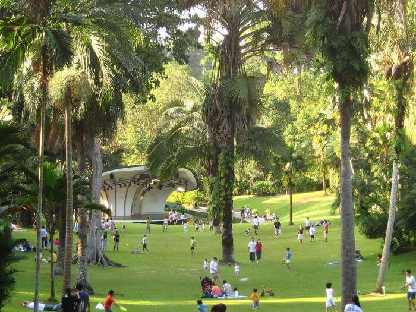

Сингапур известен своей вкусной едой, ультрасовременными городскими пейзажами и изысканной ночной жизнью, но этот город-государство также может похвастаться невероятными парками, представляющими экологическую, историческую и развлекательную ценность. Независимо от того, ищете ли вы спокойную площадку для пикника в обеденное время, находитесь в предвкушении захватывающего отдыха на природе или являетесь любителем дикой природы, вам явно придется по вкусу этот список самых невероятных парков Сингапура.
Занимая площадь в 250 акров в Marina Bay в центре Сингапура, Gardens by the Bay является один из самых популярных и известных парков города. Здесь у вас будет возможность насладиться впечатляющими зелеными насаждениями, тремя садами вдоль набережной и куполом искусственных деревьев, высота которых достигает до 50 метров. Gardens by the Bay - это не просто парк, а место для отдыха с ресторанами и магазинами, где также проходят фестивали, музыкальные концерты, показы фильмов, а также спортивные и общественные мероприятия.
Идея создать большой парк возле залива возникла в 2005 году у премьер-министра Ли Сяньлуна. Этот парк задуман как место отдыха и визитная карточка Сингапура. В январе 2006 года был объявлен международный конкурс на лучший проект для садов у залива, в котором приняли участие 170 фирм из 25 стран мира. В сентябре этого же года жюри объявило победителей: Grant Associates для Южного сада и Gustafson Porter для Восточного сада. Решение о создании Центрального сада было принято позже.
Строительство садов началось в 2007 году, торжественное открытие Gardens by the Bay состоялось в октябре 2011 года. Восточный сад использовался для проведения гребных соревнований на юношеских Олимпийских играх в августе 2010 года и открылся раньше остальных садов.
Сады у Залива (англ. Gardens by the Bay) — уникальный природный парк в Сингапуре и крупнейший архитектурно-ландшафтный проект в мире. Совокупная площадь парка составляет свыше 100 гектаров.
Сверхдеревья — конструкции высотой 25-50 метров, которые по форме напоминают деревья. Они спроектированы с большими навесами, которые обеспечивают тень днем и оживают волнующим светом и звуком ночью, а некоторые «деревья» имеют фотогальванические элементы для преобразования солнечной энергии в электрическую. На каждой конструкции посажены растения, пригодные для вертикальной посадки.
OCBC SKYWAY — длинная воздушная дорожка длиной 128 метров. На высоте 22 метра с тропы открываются захватывающие виды на сады и залив Марина-Бей.
Официальный сайт: http://www.gardensbythebay.com.sg/en.html Инфраструктура садов хорошо развита, на территории есть сувенирные магазины, разнообразные кафе и рестораны.
В то время как Gardens by the Bay предлагают множество искусственных и природных достопримечательностей, парк Singapore Botanic Gardens ориентирован на природные ландшафты и зеленые насаждения. Парк открыт ежедневно и расположен в самом центре города, являясь отличным местом для отдыха и ботаническим парком в традиционном смысле этого слова.
Парк разбит на три основные зоны - Tanglin, Central и Bukit Timah. В зоне Tanglin находится самая старая часть садов, а в зоне Central - туристический район с центром для посетителей, Evolution Garden и территория тропического леса. Bukit Timah - образовательная и открытая зона парка, с гербарием, эко-озером и детским парком. Посетители могут планировать свой визит с помощью предлагаемых путеводителей.

Здесь несколько входов, посещение его бесплатное, поэтому не переживайте, если таксист привезёт вас не к основному входу. Там только сувенирные лавки и какие-то павильоны с едой.
В Саду созданы великолепные ландшафтные композиции - озёра, тропические заросли, парковые цветники. Всё ухожено, радует глаз и настраивает на медитацию.
Местные приходят сюда для занятий йогой, ушу и цигун - ведь население Сингапура в своём большинстве это этнические китайцы. Много интересных скульптурных композиций оригинально вписаны в зелень Сада и вызывает искреннюю улыбку.
Парк Восточного побережья (East Coast Park) — это самый большой городской парк Сингапура, протянувшийся почти на 15 км вдоль живописного юго-восточного побережья главного острова страны Пулау Уджонг. Парк East Coast обладает широчайшей гаммой доступных развлечений, что делает его самым любимым местом отдыха для большинства сингапурцев.
Площадь парка — 185 гектаров, он расположен на участке юго-восточного побережья в районе Катонг. Парк East Coast был открыт в 1970-х годах после проведения обширных мелиоративных работ в этой части острова, связанных с ландшафтным проектированием, созданием рукотворного пляжа и возведением защитных волнорезов. Сегодня парк является популярным местом отдыха и развлечений, где есть мангалы для барбекю, зоны для кемпинга и площадки для занятий спортом.
Чаще всего в парке можно встретить людей, катающихся на велосипедах или роликовых коньках. Этому способствуют большая длина дорожек и отличная окружающая обстановка из солнца, прохладного морского бриза и тенистых аллей. Те же, кому нужны более острые ощущения, могут выбрать для катания скейт-парк Xtreme, оснащенный специальными горками и препятствиями.
Для любителей пляжного отдыха в парке есть большой песчаный пляж — участок берега, где можно не только загорать и купаться, но и поиграть в пляжный волейбол, а также попробовать свои силы в водных видах спорта, например, в кайт- или виндсерфинге. Еще на территории парка есть аттракцион Ski360° Cable Ski — небольшое озеро, по которому можно кататься на водных лыжах, прицепившись к специальному канату.
В парке нет недостатка в ресторанах, барах и кафе, где можно отведать разные деликатесы или просто посидеть и расслабиться, потягивая вкусный коктейль. А можно приготовить еду самостоятельно, устроив настоящий пикник под пальмами вместе с семьей и друзьями.
Заядлые рыбаки могут попытать счастья и поймать что-нибудь со специального 250-метрового пирса, как это делают многие сингапурцы.
Можно поиграть в мини-гольф — в парке работает большой крытый павильон LilliPutt Indoor Mini Golf. Площадка оформлена миниатюрами известных достопримечательностей Сингапура — все эти 18 тематических лунок оснащены визуальной анимацией и звуковыми эффектами.
MacRitchie Reservoir Park - это больше, чем просто крупнейшее в Сингапуре водохранилище; это рай для тех, кто любит наслаждаться природой. Этот поразительный парк площадью 12 гектаров пользуется большой популярностью у любителей фитнеса и туристов. Благодаря множеству туристических маршрутов и сооружений для занятий на каноэ и каяках, MacRitchie является прекрасным местом как для тех, кто наслаждается водными видами спорта, так и для тех, кто предпочитает передвигаться пешком и бегом.
Другие достопримечательности включают TreeTop Walk, 250-метровый подвесной мост, над которым находится живописный навес из верхушек деревьев, а также эстраду MacRitchie - популярное живописное место для проведения спортивных мероприятий и специальных церемоний. Наблюдение за птицами и общение с макаками также являются популярными видами деятельности. Посетители могут получить доступ к ряду удобств, включая туалетные комнаты, душевые, шкафчики и фудкорты.
Водохранилище Мак-Ритчи является один из самых старых в Сингапуре. Это большое природное водохранилище пресной воды, окруженное чащей тропического леса. Вокруг него оборудовано много тропинок для пеших прогулок и места для отдыха на природе. Есть причалы с лодками, можно арендовать и поплавать, наблюдая за умиротворенной тишиной в большом мегаполисе.
Чудесным местом, где можно отдохнуть в тени деревьев и полюбоваться городом является парк Эспланада.
Он разбит в центре города на берегу Марина Бей. Многие туристы отмечают, что во время своего отдыха приходили сюда неоднократно, исключительно для того, чтобы прогуляться или посидеть в одном из кафе, расположенных поблизости. Несмотря на свои небольшие размеры, этот парк завоевал любовь почти всех своих посетителей. По-настоящему красивое и живописное место, где можно встретить некоторых тропических птиц и восхитительные по своей природе растения.
На территории парка были построены места памяти значительным историческим личностям, например, Аллея королевы Елизаветы, Кенотаф — мемориал памяти героям первой мировой войны и другие. Здесь установлена концертная площадка, где местные таланты выступают для отдыхающих в парке.
Вечером над заливом проводятся грандиозные лазерные шоу, а еще в этом месте обустроена современная набережная, куда утром спешат на пробежку любители спорта.
ВВЕРХ